Für Familien gemacht: Kinderuhren mit Familienkonfiguration funktionieren ganz ohne eigenes iPhone, und Eltern bestimmen, mit wem ein Kind sprechen darf.
Für Familien gemacht
- Läuft auf Kinderuhren mit Familienkonfiguration – ganz ohne eigenes iPhone.
- Eltern bestimmen, mit wem ein Kind sprechen darf. Neue Kontakte und Gruppen brauchen die Freigabe eines Verantwortlichen, und Verantwortliche legen fest, zu welchen Zeiten Nachrichten spielen.
- Sprechen Sie zu zweit oder in Gruppen: die ganze Familie, nur die Kinder, die Großeltern oder Freunde aus einer anderen Familie.
- Laden Sie Personen über Nachrichten, per QR-Code oder mit einem kurzen Code zum Vorlesen ein. Erwachsene können ihre Familie jederzeit verlassen oder wechseln.
Live, wenn es darauf ankommt
- Auf unterstützten Uhren spielt eine Nachricht von selbst, sobald sie ankommt – ohne zu tippen, auch bei gesenktem Handgelenk.
- Nach jeder Nachricht bleibt Wristalk 10 Minuten live, damit Antworten sofort ankommen. Danach wird es wieder still und schont den Akku.
- Den ganzen Tag live? Schalten Sie „Wristalk live halten“ ein – mit automatischem Ausschalten nach 1, 2 oder 4 Stunden oder heute Abend und mit Akkuschutz.
- Bei „Nicht stören“ und im Schlafmodus spielt nichts – Sie sehen, was Sie verpasst haben. Stoppen Sie eine Nachricht beim Abspielen, und löschen Sie verpasste.
Privat von Anfang an
- Jede Sprachnachricht ist Ende-zu-Ende-verschlüsselt. Nur die Personen im Gespräch können sie hören – nicht wir, niemand sonst.
- Nachrichten werden nach dem Abspielen gelöscht, spätestens nach 10 Minuten. Hat Sie jemand verpasst, erfahren Sie es.
- Melden oder blockieren Sie jeden, der Sie belästigt; Verantwortliche können das auch für ihre Kinder tun.
- Anmelden mit Apple. Keine E-Mail-Adresse, keine Telefonnummer, keine Werbung, kein Tracking.
Auch auf dem iPhone
- In der iPhone-App verwalten Sie bequem Personen, Gruppen und die Einstellungen der Kinder und erteilen Freigaben.
- Sie ist selbst ein Walkie-Talkie mit Apples Push-to-Talk des Systems – Nachrichten spielen auch, wenn Wristalk geschlossen ist.
- So können auch Eltern ohne Apple Watch mit der Familie sprechen.
So sieht es aus
Apple Watch
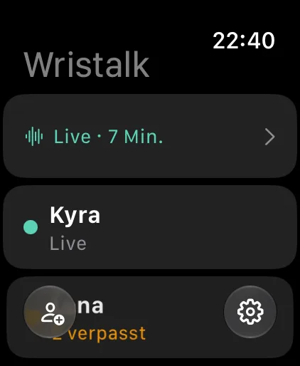
10 Minuten live nach jeder Nachricht Nachrichten spielen sofort 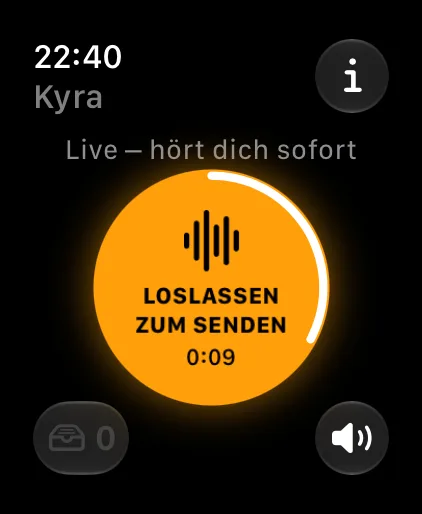
Halten zum Sprechen, loslassen zum Senden 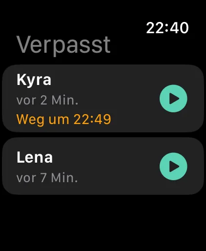
Verpasste Nachrichten zum Nachhören 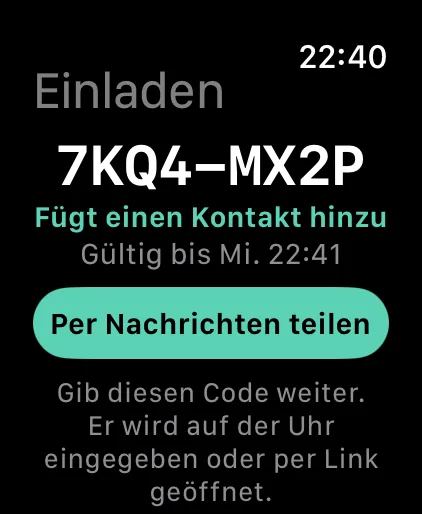
Einladen mit einem kurzen Code 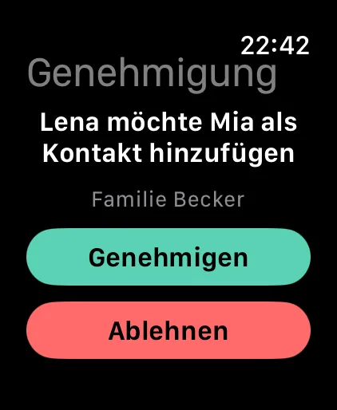
Anfragen eines Kindes freigeben 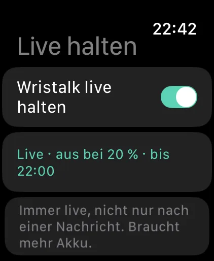
Wristalk live halten, mit Ausschalt-Timer
iPhone
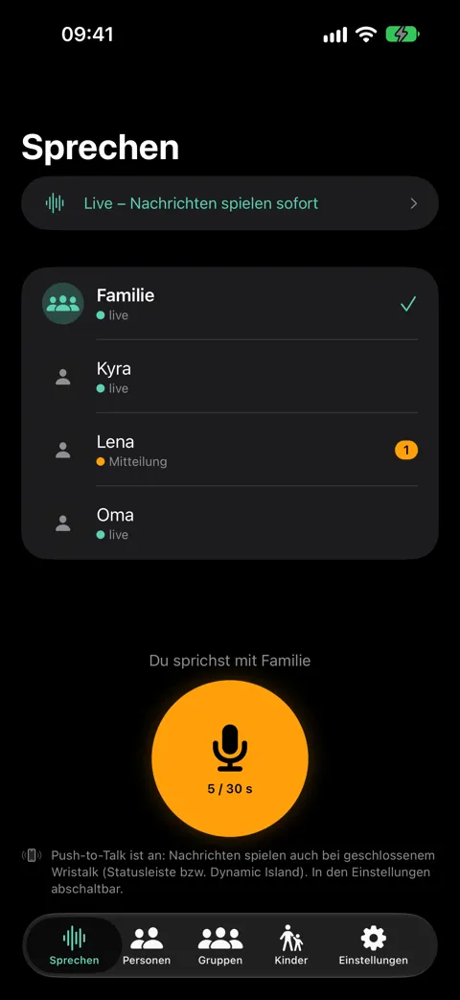
Sprechen auf dem iPhone 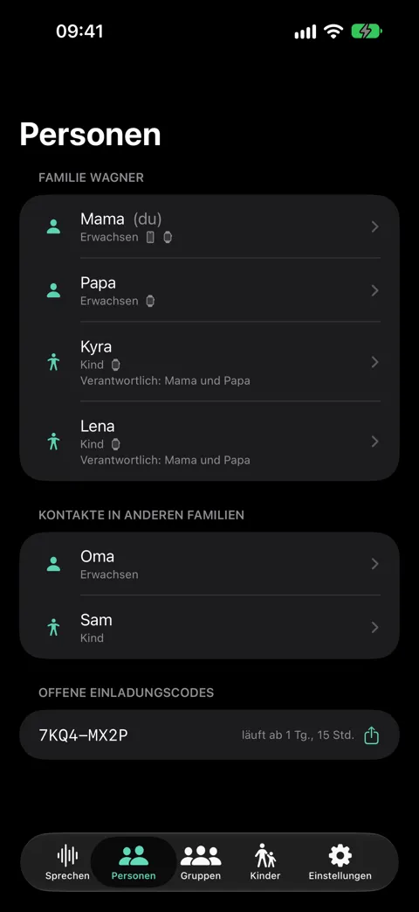
Familie und Kontakte 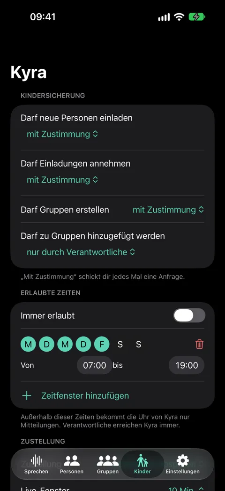
Kindersicherung für jedes Kind 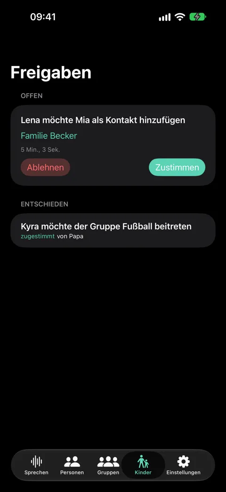
Alle Freigaben an einem Ort 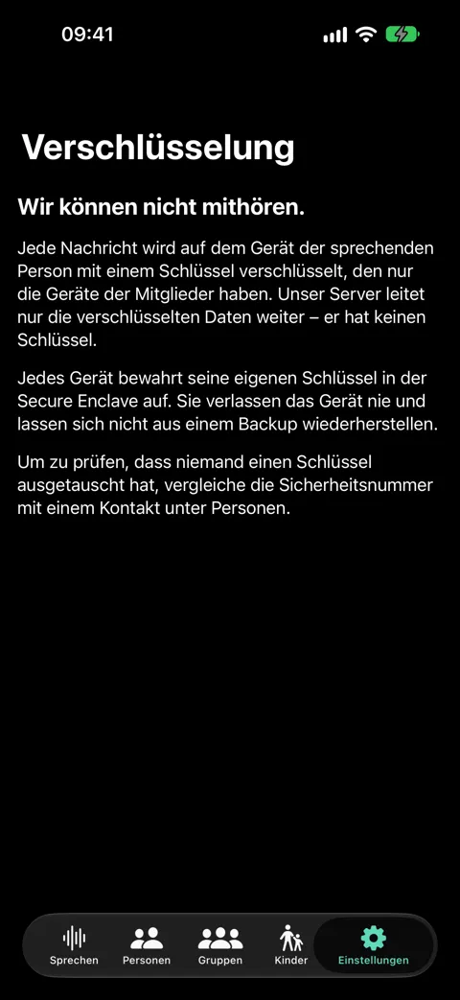
Ende-zu-Ende-verschlüsselt 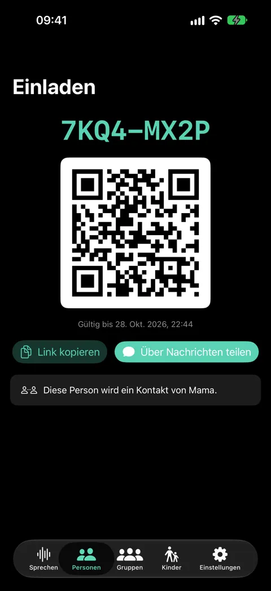
Einladen über Nachrichten oder QR-Code 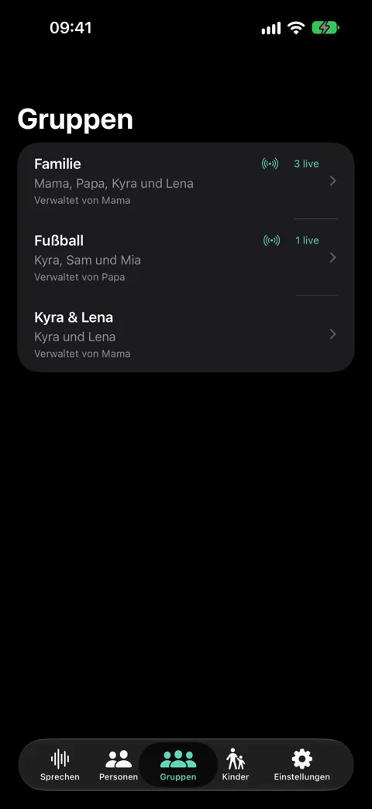
Gruppen für jeden Anlass
Welche Apple Watch?
Live über den Lautsprecher
Apple Watch SE (3. Generation), Series 10 und neuer, Ultra 2 und neuer. Nachrichten spielen von selbst über den Lautsprecher.
Mitteilungen oder Kopfhörer
Andere Uhren mit watchOS 26, etwa Apple Watch SE (2. Generation) und Series 6 bis 8. Die ganze App funktioniert; Nachrichten laufen live über Bluetooth-Kopfhörer, sonst tippen Sie zum Anhören auf eine Mitteilung.
Nicht unterstützt
Uhren, auf denen watchOS 26 nicht läuft.
Apple Watch: watchOS 26 oder neuer. iPhone: iOS 26 oder neuer. Jede Uhr bzw. jedes iPhone braucht eine Internetverbindung (WLAN oder Mobilfunk). Erhältlich im US-App-Store.
Ein Family Pass für alle
Family Pass
19,99 $ pro Jahr
Erste Woche gratisKostenlos laden. US-Preis; der App Store zeigt ihn an, bevor Sie bestätigen.
- Eine Person schließt das Abo ab. Die Familienfreigabe von Apple teilt den Family Pass mit Ihrer Apple-Familie – auch mit den Uhren der Kinder.
- Jede Familie braucht einen eigenen Family Pass, auch Verwandte und Freunde, mit denen Sie sprechen und die zu einer anderen Familie gehören (siehe Nutzungsbedingungen).
- Verlängert sich jedes Jahr automatisch. Kündigen Sie mindestens 24 Stunden vor der Verlängerung in den Einstellungen Ihres Apple Accounts (Einstellungen → Ihr Name → Abonnements).
- Neues iPhone oder neue Uhr? Tippen Sie im Family-Pass-Bildschirm auf „Käufe wiederherstellen“.
- Endet er, zeigt Wristalk den Family-Pass-Bildschirm, und Ihre Familie kann nicht sprechen, bis wieder jemand das Abo abschließt. Familie, Kontakte und Gruppen bleiben erhalten.
Fragen?
Lesen Sie die Support-Seite oder schreiben Sie an hello@wristalk.app.